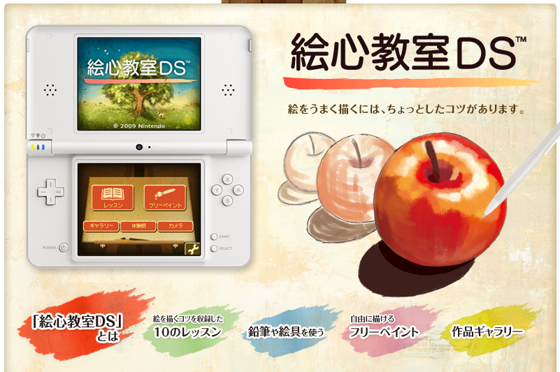
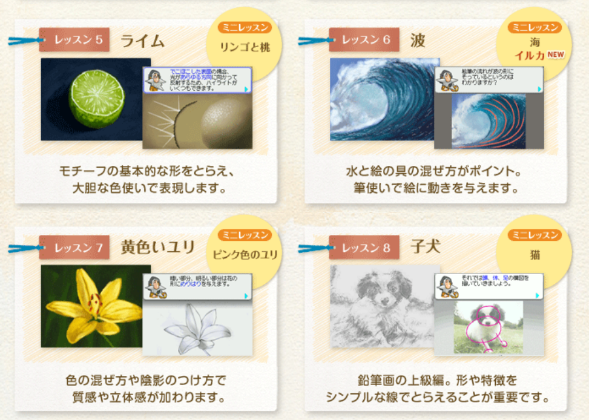
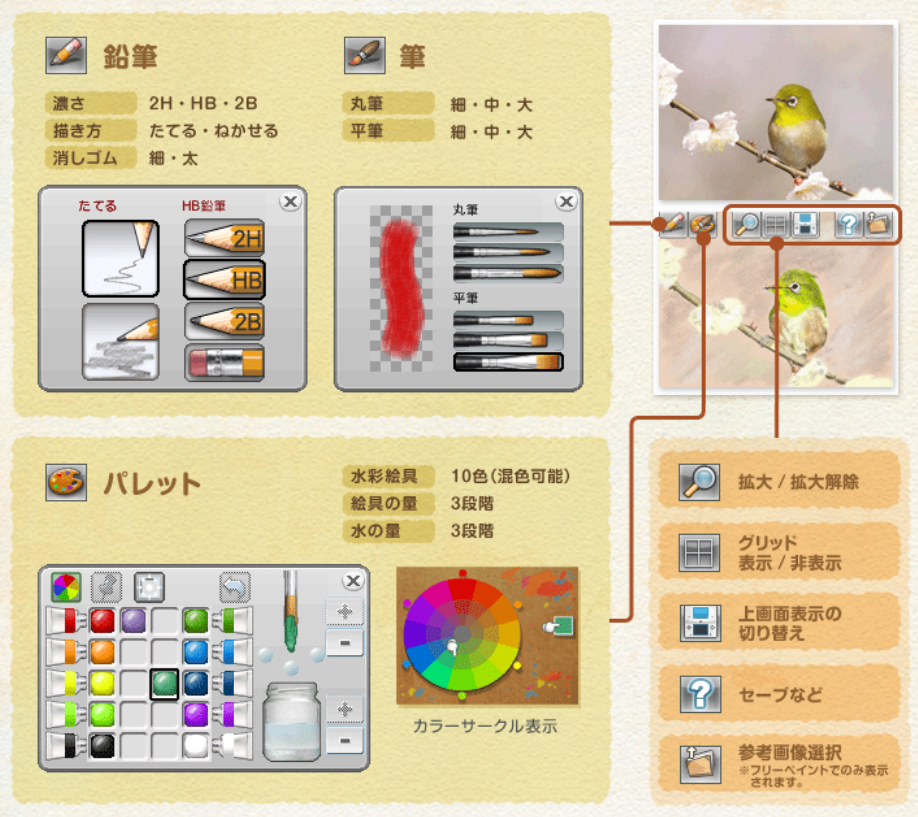
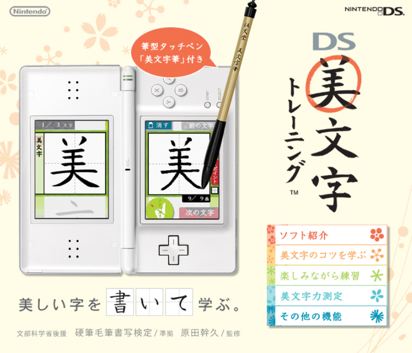
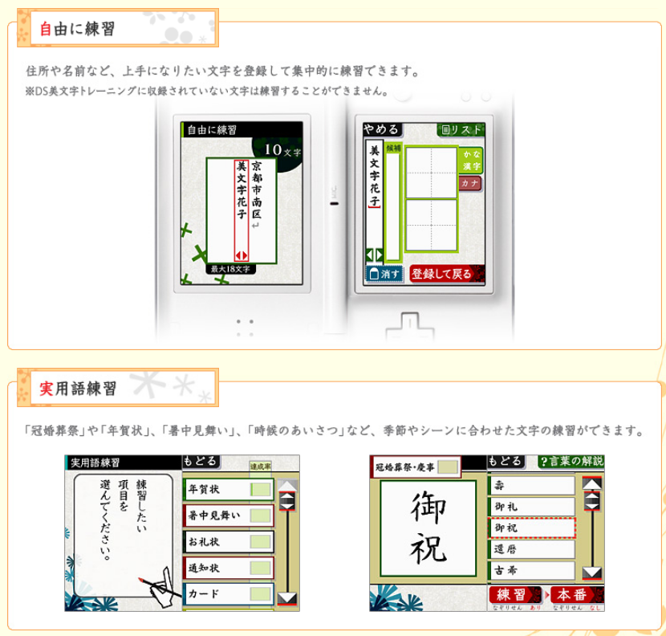
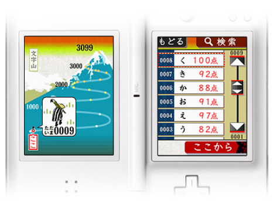
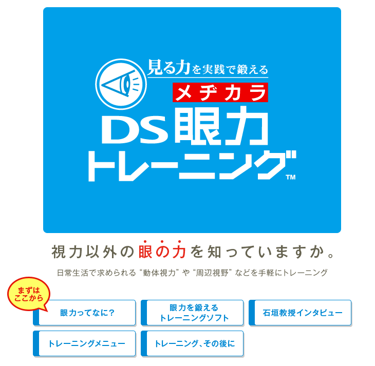
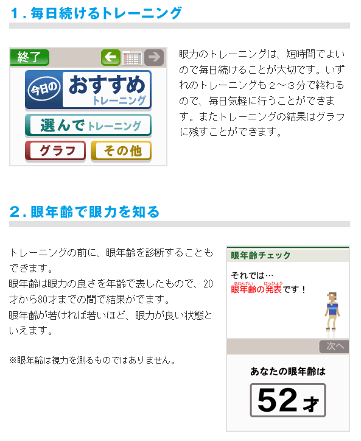
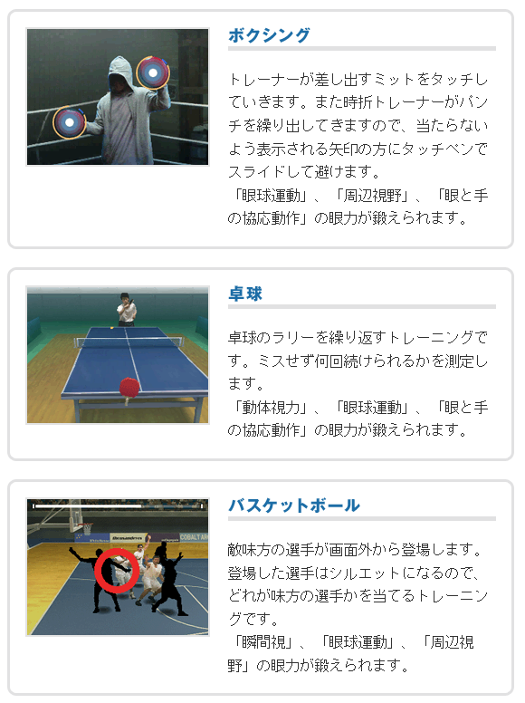

레전드 추억 발생
정말 엄청난 추억을 발굴했다. 닌텐도 DS와 그 게임들이다. 닌텐도 DS는 내가 유치원에서부터 초등학교 1~2학년 정도 까지 가지고 놀던 게임기이다. 그때 당시 다른 친구 집의 DS에는 포켓몬스터가 있는데 우리 집에는 그 칩이 없어서 굉장히 아쉬워했던 기억도 난다.
우리 집에 있던 DS에는 "게임"이라기보다, 상당히 클래식한 느낌의 칩이 많았다. 예를 들면 숨은 소질을 깨우는 그림교실, DS Bimoji Training, 숨어있는 눈의 힘 DS 안력 트레이닝 등과 같은 트레이닝 계열의 게임들이었다. 그럼에도 불구하고 나는 이 게임들을 정말 재밌게 플레이했었다.
-그림교실-



-DS Bimoji Training-



-숨어있는 눈의 힘 DS 안력 트레이닝-



모두 기억난다. 사진을 보는 것 만으로 심장이 뛴다. 오랜만에 OST를 들었을 때 느껴지는 노스텔지아는 황홀하다고까지 할 수 있다. 이걸 10년도 넘게 잊고 있었다는 사실이 믿기지 않을 정도로 생생하게 기억난다. 동심이 되살아나는 기분이다.
스포티파이에 공식 사운드트랙이 있었다면 바로 음악 페이지의 리스트에 올렸을텐데, 안타깝게도 스포티파이에는 릴리즈되어있지 않았다. 그래도, 비공식이기는 하지만 각각의 게임들에 대한 사운드트랙을 모아놓은 사이트가 있었다. (1, 2, 3)
다른 게임은 몰라도, 그림교실의 OST는 아마 리스트에 올리지 않을까 싶다.